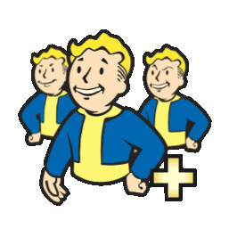

VAULT-TEC INDUSTRIES STARFIELD
Enjoy our interactive map!

Поверните устройство горизонтально
Для прогулки по убежищуVAULT-TEC / NAVIGATION SYSTEM
STARFIELD
STARFIELD / УРОВЕНЬ 0Вход из системы бункеров
РЕГИСТРАЦИЯ
САНИТАРНЫЙ ПРОТОКОЛПодготовка камеры
Поверните экран
Карта рассчитана на горизонтальный экран.